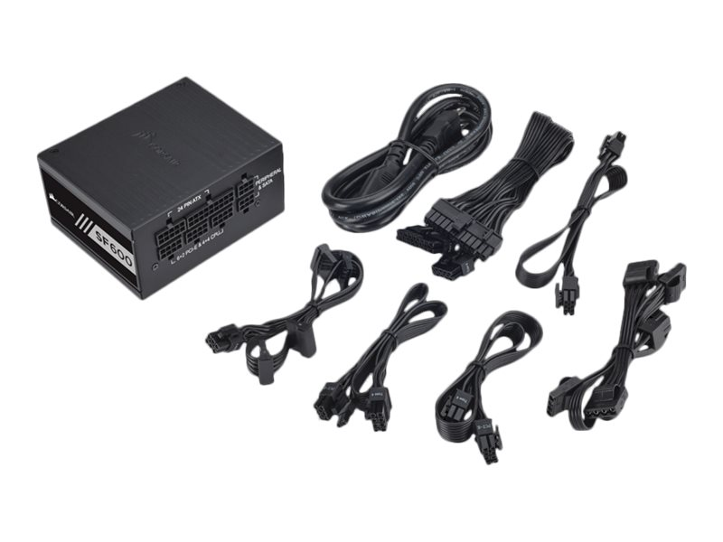

Tápegység
A számítógép energiaközpontja a tápegység (Power Supply Unit, PSU) a számítógép működésének egyik elengedhetetlen része, amely az elektromos hálózatból származó váltóáramot (AC) alakítja át egyenárammá (DC), melyet a számítógép alkatrészei használnak. Ez az eszköz biztosítja az összes komponens számára a megfelelő mennyiségű és típusú energiát, ami kulcsfontosságú a stabil és megbízható működéshez.
A tápegység fő jellemzői közé tartozik a teljesítmény (watt), a hatékonyság és a csatlakozók típusa. A különböző teljesítményű tápegységek (pl. 500W, 750W, 1000W) különböző konfigurációkhoz készülnek: egy játékra szánt gép például nagyobb teljesítményű PSU-t igényelhet, mint egy irodai célra használt számítógép. Az energiahatékonyságot gyakran a 80 PLUS minősítési rendszer jelöli, amely a tápegység hatásfokát méri különböző terhelések mellett (pl. Bronze, Silver, Gold, Platinum, Titanium).
A tápegységek számos típusú csatlakozóval rendelkeznek, amelyek különböző komponensekhez kapcsolódnak, például az alaplaphoz, a processzorhoz, a videokártyához és az adattárolókhoz. A modern moduláris tápegységek lehetővé teszik, hogy csak azokat a kábeleket csatlakoztassuk, amelyekre ténylegesen szükség van, ezzel csökkentve a kábelrendet és javítva a légáramlást a házban.
Fontos megemlíteni, hogy a tápegység kiválasztásakor érdemes megbízható gyártót választani, mint például a Corsair, Seasonic vagy EVGA, hiszen a minőségi tápegység hozzájárul az egész rendszer hosszabb élettartamához és védelméhez.

